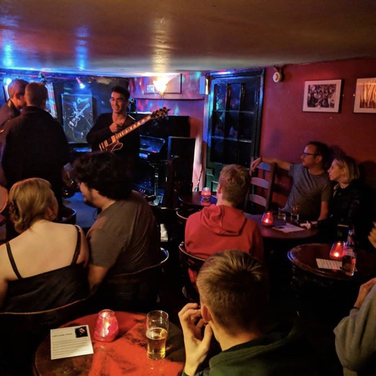

Oliver's Jazz Bar
This jazz bar is nestled in a basement around the corner from Greenwich Markets. With red painted walls, a roaring open fire, fantastic live music and a great selection of whisky, this cosy venue is the perfect place to get a drink in the cold winter months. 